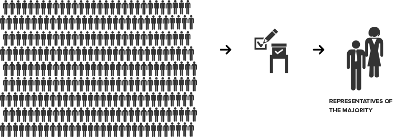
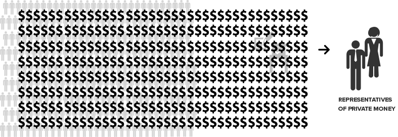

{% extends "layout.html" %}
{% block title %}Dollars in Democracy{% endblock %}
{% block body_class %}home{% endblock %}
{% block content %}
The Definition of Democracy
-
government by the people; especially : rule of the majority
- a government in which the supreme power is vested in the people and exercised by them directly or indirectly through a system of representation usually involving periodically held free elections
Democracy

Democracy Broken

Who Owns Our Politicians?
{% endblock %}